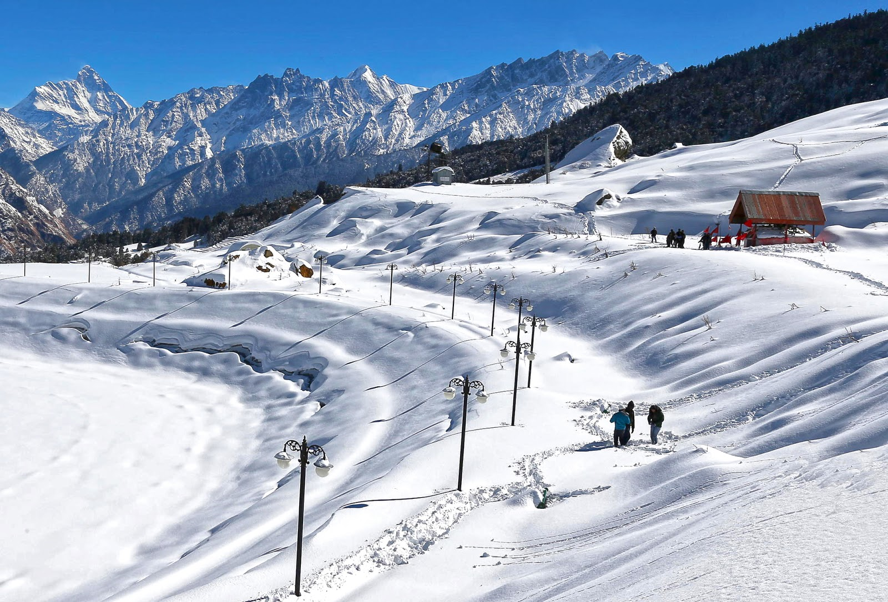
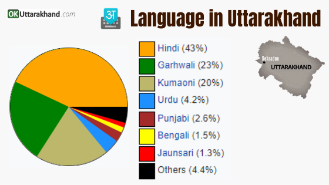
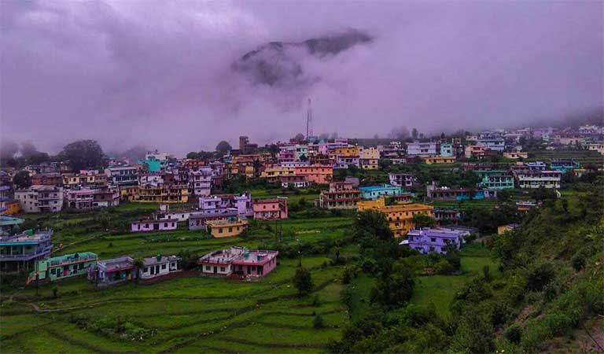

Uttrakhand
Unity in Diversity

Land of the Gods

Unity in Diversity
Uttarakhand, India- "Land of the Gods"
Uttarakhand formerly known as Uttaranchal , is a state in the northern part of India. It is often referred to as the "Devabhumi" (literally "Land of the Gods") due to numerous Hindu temples and pilgrimage centres found throughout the state. Uttarakhand, a state in northern India crossed by the Himalayas, is known for its Hindu pilgrimage sites. Rishikesh, a major centre for yoga study, was made famous by the Beatles’ 1968 visit. The city hosts the evening Ganga Aarti, a spiritual gathering on the sacred Ganges River. The state's forested Jim Corbett National Park shelters Bengal tigers and other native wildlife.
Capital: Dehradun
Location: North India
BEST TIME TO VISIT UTTARAKHAND: Uttarakhand is a destination to be visited all through the year as each season has something special to offer.
WHY VISIT UTTARAKHAND? Uttarakhand is also famed for its high altitude religious tourism attractions like Hemkund Sahib; Chardham Yatra Temples of Badrinath, Kedarnath, Gangotri and Yamunotri; and has sacred rivers like Ganga and Yamuna flowing through its land and The state's forested Jim Corbett National Park shelters Bengal tigers and other native wildlife.
No doubt that there is a beautiful and large number of Hindu Temples in Uttarakhand state. The temples in Uttarakhand are located at beautiful locations therefore Uttarakhand is also regarded as heaven on earth.
Uttarakhand is known for its beautiful Garhwali and Kumaoni culture. The various traditions, religions, fairs, festivals, folk dances, music are what distinctly separate them.
Garhwali is the main language spoken here that has a number of dialects too including Jaunsari, Marchi, Jadhi and Sailani. Garhwal is inhabited by people belonging to a number of ethnic groups and castes. These include Rajputs who are believed to belong to the Aryan origin, Brahmins who migrated after the Rajputs or later, tribals of Garhwal who stay in the Northern tracts and comprise of Jaunsaris, Jadhs, Marchas and Van Gujars.
The people of Kumaon speak 13 dialects including Kumaiya, Gangola, Soryali, Sirali, Askoti, Danpuriya, Johari, Chaugarkhyali, Majh Kumaiya, Khasparjia, Pachhai and Rauchaubhaisi. This group of languages is known as the group of Central Pahari languages. Kumaon is also rich in its folk literature which comprises myths, heroes, heroines, bravery, Gods, Goddesses and the characters drawn from Ramayana and Mahabharatha. The most popular dance form of Kumaon is known as Chhalaria and it is related to the martial traditions of the region. All the festivals are celebrated with a lot of enthusiasm and witness such traditional dance forms even today.
The lives of the people of Uttarakhand are filled with a lot of music and dance. Dancing is considered to form a major part of their traditions. Some of the folk dances include:

Barada Nati |

Langvir Nritya |

Pandav Nritya |
Residents of Garhwal Hills have their own pattern of wearing clothes due to the cold weather of the place as a result of which, wool obtained from sheep or goat is used to prepare woollen clothes.
Traditional Dress Of Men-Almost everyone follows a similar dressing style. The most commonly worn lower garment is either a Dhoti or a Lungi. Various coloured Kurtas are worn as the upper garment. In addition, headgear or a turban is a must add-on to complete this traditional costume. Kurta-Pyjama is another very famous alternative for the men of Uttarakhand. Women, as well as men, wear woollen jackets as well as sweaters in the winter season.

Traditional Dress Of Women-Ghagri is a long skirt that is worn by mostly all the women of Uttarakhand. It is complemented with a beautiful coloured Choli which is an Indian blouse and a cloth covering the head i.e., an Orni. This Orni is generally fixed firmly to the waist. This is the traditional dress of the women of both Garhwalis as well as Kumaonis. Ghagra-Pichora is the traditional bridal costume of the Kumaoni women which is similar to the Ghagra Lehenga-Choli. Pichora is a Kumaoni covering (more like a veil) that is decorated with gold and silver embroidery.
the state of Uttarakhand also has a rich tradition of various art forms like jewellery making, wood carvings, painting, decorative temples and many more. Needless to say, most of the arts of Uttarakhand and the local artists derive inspiration from nature. Whether you are artistically inclined or not, knowing about the rich history and significance of beautiful art forms of Uttarakhand will leave you intrigued and stunned. Let us look at some of the best art forms of Uttarakhand:
Miniature Painting- The miniature painting of Uttarakhand is one of the major and important schools of miniature painting in India. It has a rich history, and it dates back to the Mughal era. The Mughal Prince, Sulaiman Sukoh, who was attracted by the natural beauty of the region, came to Uttarakhand during his years of exile to spend time in the laps of the mighty Himalayas. He brought with him his painters who first started miniature painting in the region. Inspired by the natural beauty of the land, the Prince’s painters created many stunning artworks during the era, which continue to inspire many generations of new artists till date. Over the years, the miniature painting artform in Uttarakhand has evolved significantly and has developed a distinct style. However, the majority of the artworks are still inspired by the beauty of the land.
Aipen- An indigenous Uttarakhand folk art form, Aipen is one of the traditional forms of Rangoli that is practised everywhere in the state. This art has cultural and religious implications in the life of the Kumano community. Like the different forms of Rangoli practised in India, Aipen involves drawing various repetitive geometric patterns and motifs. There are no strict rules in terms of composition, and the artists have full freedom to express themselves and follow their instincts in creating different styles and patterns. Another unique thing about this folk art of Uttarakhand is the material used for making Aipen. Unlike other parts of India, where people use colourful powders for making Rangoli, Aipen is used using finely grounded rice that is made into a paste with water. And, the patterns are made with bare hands, against a dark background.
Wall Paintings- Wall paintings are a famous art form of Uttarakhand that has been an integral part of the local history and culture since years of anonymity. It is omnipresent in Uttarakhand, and is widely appreciated by the art lovers worldwide because of the aesthetic value and its splendour. The wall paintings are most prominent in the Kumaon and Garhwal regions, and they have a rich tradition which were not known to the world until recently when the art connoisseurs of the world took note of this brilliant art form and its exquisite finesse.

Miniature Painting |
Aipen |

Wall Paintings |
After years of struggle, the state (Uttarakhand) cinema finally sawn at the end of tunnel when First Garhwali Feature Film "JAGWAL" (Wait) produced by Parashar Gaur released on May the 4th 1983 at Mavalankar Hall In Delhi. Jagwal is a brain child of Parashar Gaur who has spent a sizeable chunk of his life in promoting Garhwali culture. The film attracted a large number of people from and around the neighborhood of the capital with several travelling all the way from places as far as Sharanpur, Meerut and Modi Nagar. The response was tremendous. It appeared that the entire Garhwali population had descended on the theatre. The Tickets priced at Rs 5 were sold for 50 and a few even went for whopping 100.
After "Jagwal", there is a long series of films that have been released so far. Among them are Kabhi Sukh-Kabhi Dukh (producd by Bindesh Naudiyal). Ghar-Jawain, (produced by Nautiyal) Kauthik (produced by Sheel choudhry). Udnkar (Produced by Mrs Bisht), Pyaru Rumal (Dubbed from' Kusmo Rumal 'Nepali) Samlaon, Phulee, Madhulee, Bantwaroo, Jeetu Bagdwal, Chakarchaal, Chwati Bwari. In Kumaoni. Only a film has been released "Megha Aa" (Produced by Jivan Bisht).
The food of Uttarakhand is dominated by Garhwali cuisine and Kumaoni cuisine, two of its main regions. The dishes are simple and locally grown without being dominated by complex spices. Some of the most famous dishes of Uttarakhand are cooked over a slow fire and consists of lentils. Some of the most delicious mouth-watering specialities of Uttarakhand include-

Urad Dal ke pakode |
Phanu |

Jhangore ki kheer |
Uttarakhand is a religious state with immense beauty. The people of Uttarakhand celebrate all festivals while there are numerous fairs organised here. The traditional rituals and folks songs of Uttarakhand have been kept alive by these fairs in festivals. Here is a list of Festivals of Uttarakhand which the people in full zeal celebrate:

Kumaoni Holi |
Harela |

Kumbh Mela |
The oldest National Park in India, Jim Corbett National Park was established in 1936 as Hailey National Park and is home to the critically endangered species of the Royal Bengal Tiger
The state is home to about 102 species of mammals, 623 types of avifauna, 124 varieties of fish, 19 types of amphibians and 69 categories of reptiles. Some of the highly endangered faunae you can find in Uttarakhand are Asian elephant, snow leopard, tiger, musk deer, Himalayan monal, king cobra, bharal, etc.
Uttarakhand has a highly varied topography, with snow-covered peaks, glaciers, deep canyons, roaring streams, beautiful lakes, and a few patches of dusty plains in the south. Some of the highest mountains in the world are found in Uttarakhand.
Tiger Reserve and sanctuaries in Uttarakhand- The best way to explore the Uttarakhand are wildlife spotting beautiful nature make up for ideal holiday destinations and valley flower national park, lake and more.

Jim Corbett Tiger Reserve- Nainital District, Ramnagar |

Kalagarh Tiger Reserve- Division Lansdowne, Dugadda Range, Pauri Garhwal |

Rajaji Tiger Reserve- Near Cheela Dam, Haridwar to Rishikesh Road Cheela Colony, Haridwar |

Nandhaur Wildlife Sanctuary- |

Nanda Devi National Park- |

Binsar Wildlife Sanctuary- |
Lakes- Uttarakhand is home to some of the beautiful and enchanting natural lakes in India attracts a large number of tourists. Crystal clear water lakes both small and big are dotted throughout Uttarakhand with lavish surroundings. Uttarakhand concludes a priceless treasure of lakes glittering in eyes of the tourists. Some of the lakes are so beautiful added by surrounding natural charm that they should be captured as a photographic memory ever. These sapphire-hued lakes perfectly complement the scenic landscape of verdant hills, floral meadows, and snow-clad Himalayan peaks. At higher elevations, glacial lakes are a common sight for trekkers and mountaineers.

Bhimtal Lake |

Chenab Lake |

Kedartal Lake |

Mussoorie Lake |

Naini Lake |

Tehri Lake |
Hill Stations- Dotted with long mountain ranges and glittering jewels in the world map, Uttarakhand is well-known for its glorious hill stations having all the ingredients for perfect love-making holidays. Majestic views of surrounding mountains, snow-capped Himalayas, unpolluted natural charm, meandering slopes, and up-down pathways sided by lush greenery.
|
Almora |

Auli |
Chamba |
|
Chakrata |

Dhanaulti |
Mussoorie |

Nainital |
Pithoragarh |

Ranikhet |
Minerals are inorganic substances, which contain one or more elements. Rocks consist of minerals. It is a common believe that Himalaya as a whole are rich in mineral wealth. During the last eighty years or so, a number of geoscientists have been carrying out surveys and prospecting work in different parts of Garhwal hills and besides the metal ores which were already known to common people (Copper, Lead, Zinc, Silver, Gold, Iron ore etc.), a number of new minerals of utility have been located. The widening gap between the presence of minerals at a place and their local non-utilization due to various reasons is the greatest problem in developing the mineral industry in Garhwal hills.
Minerals are inorganic substances, which contain one or more elements. Rocks consist of minerals. It is a common believe that Himalaya as a whole are rich in mineral wealth. During the last eighty years or so, a number of geoscientists have been carrying out surveys and prospecting work in different parts of Garhwal hills and besides the metal ores which were already known to common people (Copper, Lead, Zinc, Silver, Gold, Iron ore etc.), a number of new minerals of utility have been located. The widening gap between the presence of minerals at a place and their local non-utilization due to various reasons is the greatest problem in developing the mineral industry in Garhwal hills.
Geologically the Nayyar catchments comprise three main litho-tectonic units first as Almora crystalline in the north & northeastern parts covering parts of Thalisain, Bironkhal, Pabo and Pauri, second as Sedimentary belt of Jaunsar, Krol-Tal sequence in Rikhnikhal, Bironkhal and Jahrikhal blocks and third as Shivalik belt. From economic point of view, the Krol limestone is quarried for sugar industry, lime and some refractory. While a few pockets of gypsum are seen in the Krol Limestone. The Phyllites and slates are used as roof tiles and quartzites as building and road materials. A locality of lead and zinc mineralisation is seen in Bironkhal and Thalisain area. River Sand, gravels and bajri are used in building constructions. A few mica flakes are quite large in dimension with in the Almora crystalline and some times excavated by the local people.
The climate of Uttarakhand is temperate, marked by seasonal variations in temperature but also affected by tropical monsoons. January is the coldest month, with daily high temperatures averaging below freezing in the north and near 70 °F (21 °C) in the southeast. In the north, July is the hottest month, with temperatures typically rising from the mid-40s F (about 7 °C) to about 70 °F daily. In the southeast, May is the warmest month, with daily temperatures normally reaching the low 100s F (about 38 °C) from a low around 80 °F (27 °C). Most of the state’s roughly 60 inches (1,500 mm) of annual precipitation is brought by the southwest monsoon, which blows from July through September. Floods and landslides are problems during the rainy season in the lower stretches of the valleys. In the northern parts of the state, 10 to 15 feet (3 to 5 metres) of snowfall is common between December and March.
| Temperature | ||
|---|---|---|
|
|
|
|
The official language of Uttarakhand is Hindi, which is spoken natively by 43% of the population, and also used throughout the state as a common language. Additionally, the classical language Sanskrit has been declared a second official language by the Govt. of Uttarakhand.
The other major regional languages of Uttarakhand are Garhwali, which is spoken by 23% of the population mostly in the western half of the state also called the Garhwal Division.
Kumaoni, spoken in the eastern half mostly Kumaon Region and native to 20%, and Jaunsari, whose speakers are concentrated in the Dehradun district in the southwest and makeup 1.3% of the state’s population.
There are also sizeable populations of speakers of Urdu (4.2%) and Punjabi (2.6%), both mostly found in the southern districts, Bengali (1.5%) and Bhojpuri (0.95%), both mainly present in Udham Singh Nagar districts in the south-east, and Nepali (1.1%, found throughout the state, but most notably in Dehradun and Uttarkashi).

Interested in visiting places in Uttarakhand? Here is a list of the best places to visit in Uttarakhand for a unique experience and a fun-filled vacay amidt the snow-capped mountains and the serene landscape. Experience heaven as we bring you the best places to visit in this piece of paradise nestled in Northern India. Take a look at the best Uttarakhand tourist places!

Rishikesh |

Haridwar |
Dehradun |

Valley Of Flowers |
Kedarnath |
Badrinath |
|
Gangotri |
Yamunotri |
Rudraprayag |
|
Devprayag |
Joshimath |
Kanatal |
Uttarakhand is well renowned for its fabulous natural beauty that draws a lot of tourists from different parts of the world. Another reason to visit Uttarakhand is to experience the rich cultural heritage as there were many places in this state which served as summer retreats during the colonial times. The best way to explore these famous monuments in Uttarakhand is through a road trip which also provides an opportunity to explore the green or snowcapped hills along the way. Here are some of the best road trips to cover the fabulous and refreshing heritage sites in Uttarakhand:

Katarmal Sun Temple |

Baijnath Temple |

Dwarahat |
|
Bageshwar |

Narendra Nagar |

Patal Bhuvaneshwar Cave |

Mukhteshwar Temple- Nainital |

Pithoragarh Fort |

Vanasur Ka Kila |

Timpli Pass- Kalsi |

The Ashokan Rock Edict- Kalsi |
Chaukhutia |